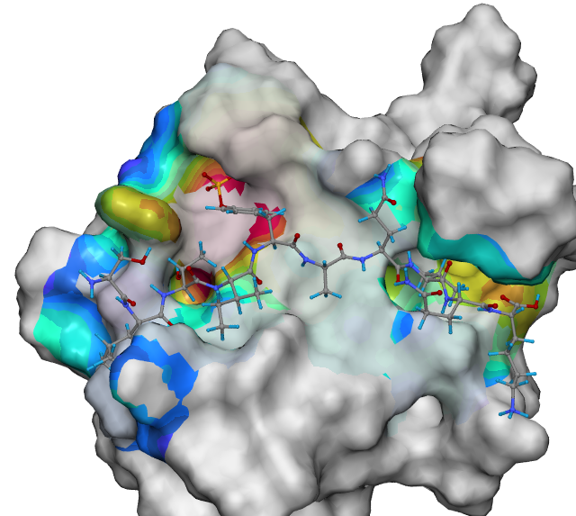

|
Download
Literature
|
The pictures on this site have been generated by the POVRay ray tracing program using the scenery description files which are created by the surfcomp-monitor. Comparison of thermolysin inhibitor surfaces
The comparison between 1THL and other members of the thermolysin dataset. The pictures reveal the similarities between the molecular surfaces, color coded with the electrostatic potential.
Surface alignment of 1THL (blue) and 1TMN (red). The similar surface regions of 1THL and 1TMN are colorcoded by the electrostatic potential. SH2 Domain Comparison

Surface differences between SAP and EAT-2 with structures. The similar surface is highlighted with less intensive colors while the surface areas that were not compared are displayed in gray. The colors are encoding the electrostatic potential (ESP) of the surfaces, where blue indicates negative and red positive areas. The signaling peptide SLAM is shown in the SAP/EAT-2 binding site. |
||||||||||||||||||||||||||||